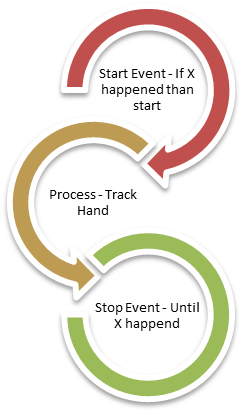
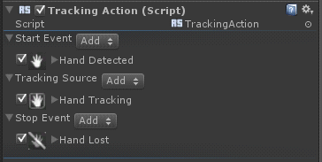

|
Continuous Actions describe a process of actions. The toolkit offers three parts to customize such a process, as illustrated in Figure 90:

Figure 90: 3-Stage Custom Interaction
| 1. | Start Event (Event Trigger): The start trigger defines the event that triggers an interaction starting point. The event can be the detection of a hand or the detection of a gesture. You can choose any rule that implements the event trigger as the start event. |
| 2. | Process Trigger: The process trigger defines the interaction process. The trigger type varies with different trigger implementations. For example, the Tracking Action is a Tracking Trigger and you can configure what is being tracked. |
| 3. | Stop Event (Event Trigger): The stop event defines the stopping criteria of the continuous operation. For example, the stopping event can be that a gesture is lost. |
|